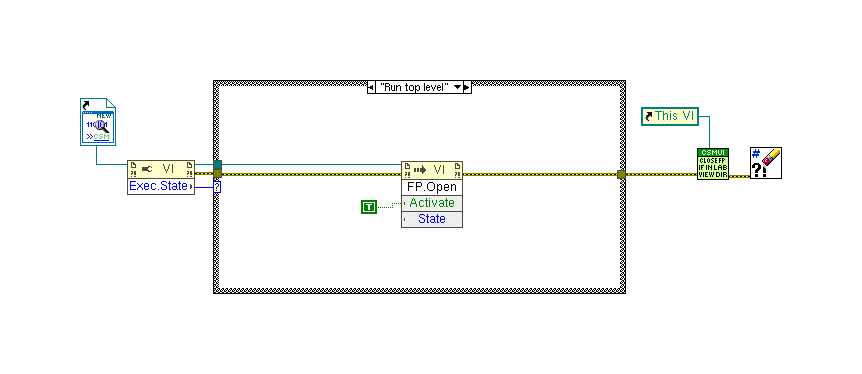

LabVIEW VI Comparison Report
07:05:19 10/29/2026
First VI: /workspace-base/src/user.lib/_NEVSTOP/Communicable State Machine(CSM)/_tool/CSM - Debug Console - DebugTool.viSecond VI: /workspace/src/user.lib/_NEVSTOP/Communicable State Machine(CSM)/_tool/CSM - Debug Console - DebugTool.vi
| Front Panel Overview | ||

| ||
| Block Diagram Overview | ||

|
 |
- Front Panel
- Front Panel Position/Size
- Block Diagram Functional
- Block Diagram Cosmetic
- VI Attribute
Detailed Information
1. VI Attribute - Documentation (VI Properties)
- description text : changed from "New version of the CSM Debug Console, you can use this tool: 1. Select an existing CSM instance, open the front panel and block diagram. 2. Scan the API interfaces of existing CSM instances. 3. Select an API interface, call synchronously or asynchronously, view the return value. 4. View the overall program's running log. 5. Run Scripts." to "New version of the CSM Debug Console, you can use this tool: 1. Select an existing CSM instance, open the front panel and block diagram. 2. Scan the API interfaces of existing CSM instances, including the API list of Python CSM modules. The API list is auto-filled, and APIs that are not predefined can also be called. 3. Select an API interface, call synchronously or asynchronously, view the return value. 4. View the overall program's running log. 5. Run Scripts."
- Help Tag